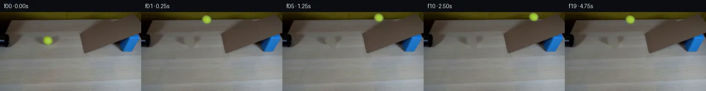

![首帧]()

Round 00
2026-11-05T01:38:17.991709+00:00像素候选变化代码 +319/−0inspection 更新
pixels 39f9760965e12134 · code 717f0b47e1547c8f
查看本轮 generate.py 真实 diff
--- previous/generate.py
+++ current/generate.py
@@ -0,0 +1,319 @@
+#!/usr/bin/env python3
+"""PixelWorld-Text: Tennis ball rolling out of pipe onto cardboard ramp.
+
+Physics: ball rolls right (uphill) from pipe exit, decelerates due to
+ramp incline, reaches a peak, then rolls back left.
+
+Output: 20 frames at 256×144, 4 fps, plus all required artifacts.
+"""
+
+import sys
+from pathlib import Path
+import numpy as np
+from PIL import Image
+
+# ---------------------------------------------------------------------------
+# Configuration
+# ---------------------------------------------------------------------------
+W, H = 256, 144
+N_FRAMES = 20
+FPS = 4
+WORKSPACE = Path(__file__).resolve().parent
+FRAMES_DIR = WORKSPACE / "frames"
+TMP = WORKSPACE / ".tmp"
+
+# Ball trajectory parameters (in pixel units, frame = time unit)
+BALL_CX0 = 87.0 # ball center x at frame 0
+BALL_CY0 = 52.0 # ball center y at frame 0
+V0 = 20.0 # initial velocity (pixels/frame, rightward)
+ACCEL = -2.0 # deceleration (pixels/frame^2, along ramp)
+SLOPE_DY_DX = -0.06 # dy/dx for ball path along ramp
+
+# ---------------------------------------------------------------------------
+# Step 1: Load frame 0
+# ---------------------------------------------------------------------------
+print("Loading first_frame.png ...", flush=True)
+frame0 = np.array(Image.open(WORKSPACE / "first_frame.png")).astype(np.float64)
+assert frame0.shape == (H, W, 3), f"Unexpected shape: {frame0.shape}"
+
+# ---------------------------------------------------------------------------
+# Step 2: Create ball mask
+# ---------------------------------------------------------------------------
+print("Creating ball mask ...", flush=True)
+r, g, b = frame0[:, :, 0], frame0[:, :, 1], frame0[:, :, 2]
+
+# Ball pixel criteria: yellowish with strong yellow signature
+# Use a combination of high R+G and R+B with low B relative to R
+ball_mask = ((r > 105) & (g > 100) & (b > 30) &
+ ((r + g) > 2.2 * b) & # yellow has low blue
+ (r > 100)) # not too dim
+
+# Dilate slightly to capture soft edges
+from scipy.ndimage import binary_dilation
+ball_mask = binary_dilation(ball_mask, iterations=1)
+
+# Get ball bounding box
+ys, xs = np.where(ball_mask)
+bx0, bx1 = xs.min(), xs.max() + 1
+by0, by1 = ys.min(), ys.max() + 1
+ball_bbox = (bx0, by0, bx1, by1)
+print(f" Ball bounding box: ({bx0},{by0})-({bx1},{by1}) size={bx1-bx0}x{by1-by0}", flush=True)
+
+# ---------------------------------------------------------------------------
+# Step 3: Inpaint the ball from frame 0 to create clean background
+# ---------------------------------------------------------------------------
+print("Inpainting ball from background ...", flush=True)
+
+# Use distance-weighted inpainting: for each ball pixel, average nearby
+# non-ball pixels weighted by inverse distance.
+bg = frame0.copy()
+
+# Create a larger mask for the inpainting search region
+search_region = np.zeros((H, W), dtype=bool)
+pad = 4
+sy0 = max(0, by0 - pad)
+sy1 = min(H, by1 + pad)
+sx0 = max(0, bx0 - pad)
+sx1 = min(W, bx1 + pad)
+search_region[sy0:sy1, sx0:sx1] = True
+
+# For efficiency, only inpaint within the ball bounding box + padding
+ball_ys, ball_xs = np.where(ball_mask & search_region)
+nonball_ys, nonball_xs = np.where(~ball_mask & search_region)
+nonball_colors = bg[nonball_ys, nonball_xs] # (N, 3)
+
+if len(nonball_ys) > 0:
+ for i in range(len(ball_ys)):
+ py, px = ball_ys[i], ball_xs[i]
… diff truncated; 232 more lines …